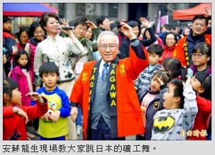

三峽梅樹月開幕 大跳日本礦工舞
翁聿煌｜自由時報／大台北都會生活｜2016年3月13日
三峽區為紀念本土繪畫大師李梅樹而舉辦的「梅樹月」活動，昨天在祖師廟前廣場熱烈展開，今年也是三峽老街創建一百週年、三峽成福煤礦開挖一百週年紀念，各項活動豐富多元。昨天開幕式特別邀請日本田川市石炭（煤礦）歷史博物館長安蘇龍生到場，教大家跳日本的「礦工舞」，帶動現場高潮。
活動多元 與成福煤礦百週年相輝映
李梅樹紀念館長也是李梅樹次子李景光說，「梅樹月」活動舉辦五年來，將活動延伸到三峽老街和社區，一方面彰顯李梅樹的在地藝文傳承，同時還賦予老街商家的文創新生命。今年除了歡慶三峽老街邁入一世紀，更與三峽最早以現代機具開採的成福煤礦百週年相互輝映。
所以今年的活動主場也包括成福煤礦，距離老街約廿分鐘車程，現場展出「百年風華：走過黑金歲月」紀念特展，參展作品除了本土畫家李梅樹、礦工畫家洪瑞麟等人作品，還向日本田川市石炭（煤礦）歷史博物館商借日本知名「炭坑繪師」山本作兵衛的多件作品展出，他的炭坑記錄畫獲得聯合國教科文組織登錄為「世界記憶遺產」。李景光希望藉由藝術特展形式，讓後代民眾重新審視煤礦如何帶動台灣經濟發展的「黑金歲月」。
今年的「梅樹月」活動豐富，主辦單位還設計有趣的「賴和文學小旅行」導覽，成福黑金×生態小旅行、台灣樹藝再生之美DIY、梅樹月主題書展、李梅樹紀念音樂會及校園巡迴展等活動，持續到四月廿四日，邀請大家一起來感受李梅樹的大師魅力。